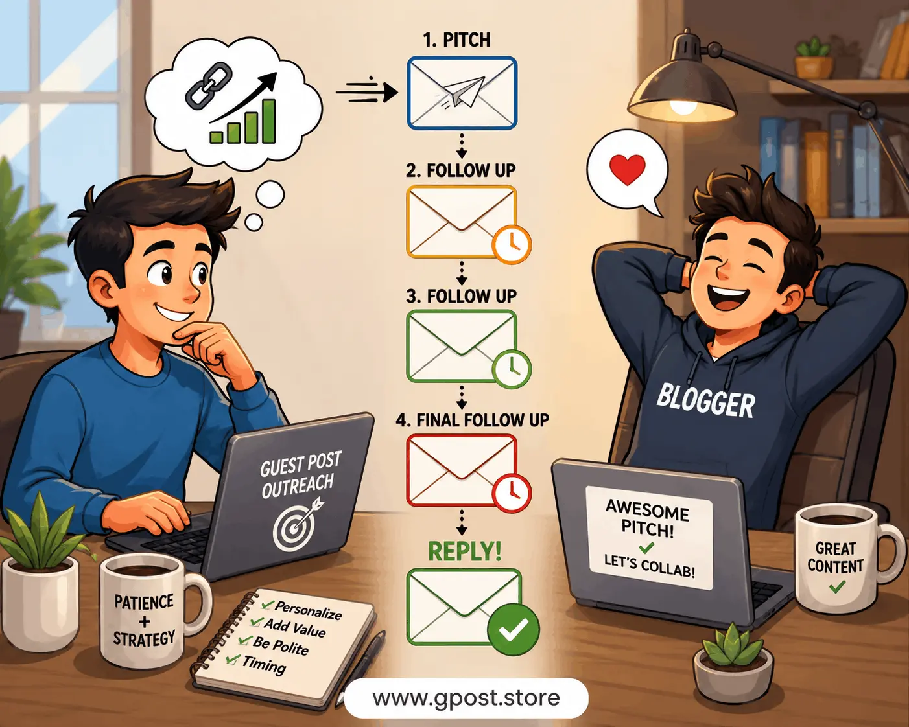

How to Follow Up Guest Post Pitch Without Spam – Complete Outreach Strategy (2026)
How to follow up guest post pitch without spam is one of the most important skills in modern SEO outreach because most guest post pitches never get a reply on the first email, and the difference between success and failure often comes down to how you follow up.
In 2026, bloggers and website owners receive hundreds of outreach emails every week, which means your follow-up strategy must be polite, natural, and value-driven instead of repetitive or pushy. A good follow-up can double your response rate without damaging your brand reputation.
This complete guide explains how to build a professional outreach system using proven SEO communication strategies, including timing, psychology, and email sequencing techniques that actually work.
What is How to Follow Up Guest Post Pitch Without Spam?
How to follow up guest post pitch without spam refers to the process of sending polite reminder emails after your initial guest post outreach without irritating the recipient or triggering spam filters.
It is not about repeating your message again and again. Instead, it is about strategically reminding bloggers while adding value and maintaining professionalism.
Simple Definition
It is a structured SEO outreach method used to increase response rates by sending respectful follow-up emails after a guest post pitch without sounding aggressive or spammy.
Why It Matters in SEO Outreach
Follow-ups are a critical part of guest blogging because most responses do not come from the first email.
- Most bloggers miss first outreach emails
- Inbox overload reduces visibility
- Proper follow-ups increase reply rates
- Helps build long-term backlink relationships
- Improves guest posting success rate significantly
A strong guest post outreach follow up strategy is often the difference between getting ignored and getting published.
For a complete system, check Guest Posting Outreach to understand full outreach workflow.
Types of Guest Post Follow-Up Emails
1. Polite Follow-Up Email
A polite guest post follow up email is short, respectful, and includes a gentle reminder without pressure.
2. Value-Based Follow-Up
This type adds extra value like topic ideas or content suggestions.
3. Sequence-Based Follow-Up
A structured guest post email sequence strategy 2026 includes multiple timed emails designed to increase engagement gradually.
4. Final Reminder Email
A soft closing message that gives one last chance to respond.
How to Find Guest Posting Opportunities
Before follow-ups, targeting the right websites is essential.
- Use Google search operators like “write for us” + niche
- Analyze competitor backlink profiles
- Join blogging communities
- Check resource pages in your niche
Better targeting increases your follow-up success rate significantly.
Step-by-Step Guest Post Follow-Up Strategy
Step 1: Send Initial Pitch
Keep it short, personalized, and relevant to the blog’s audience.
Step 2: Wait for the Right Time
The best time to follow up guest post pitch is usually 3–5 days after the first email.
Step 3: First Follow-Up
Send a polite reminder asking if they had a chance to review your pitch.
Step 4: Second Follow-Up
Add value by suggesting new topic ideas or improvements.
Step 5: Final Follow-Up
Politely close the conversation and leave the door open for future collaboration.
Advanced tactics are explained in Outreach Response Rate Increase Tips for improving reply rates.
Best Practices for Non-Spam Follow-Ups
- Keep emails short and clear
- Always personalize messages
- Never send multiple emails in one day
- Avoid aggressive or salesy language
- Add value in every follow-up
Image Section – Guest Post Outreach Workflow

Step-by-step guest post follow-up strategy showing timing and email sequence for SEO outreach
Common Mistakes to Avoid
- Sending too many follow-ups
- Using copied templates without personalization
- Ignoring blogger preferences
- Writing long and boring emails
- Not tracking outreach responses
These mistakes can damage your outreach reputation and reduce future opportunities.
Pro SEO Tips for Better Response Rates
Use Human Tone
Write like you are talking to a real person, not a marketing robot.
Focus on Relevance
Only pitch topics that match the blog’s audience.
Track Your Emails
Use tools or spreadsheets to monitor follow-ups and responses.
Improve Subject Lines
Simple subject lines increase open rates significantly.
Explore more opportunities in Blogs That Accept Guest Posts to expand your outreach targets.
Hidden Realities of Guest Post Follow-Ups
Many beginners assume follow-ups are just reminders, but in reality:
- Timing affects response rate more than message quality
- Some bloggers only respond on second or third email
- Over-following can permanently damage your domain reputation
- Personalized follow-ups outperform templates by a large margin
Is Guest Post Follow-Up Still Worth It in 2026?
Yes, follow-up strategies are more important than ever in 2026 because inbox competition has increased dramatically.
However, success depends on quality, timing, and personalization rather than volume.
When to Avoid Following Up
- If the website clearly states “no follow-ups”
- If multiple emails already went unanswered
- If the domain looks inactive or outdated
- If your pitch was irrelevant initially
FAQs
1. What is guest posting?
Guest posting is publishing articles on other websites to gain backlinks and improve SEO rankings.
2. Is it safe to follow up guest post pitches?
Yes, if done politely and without spam behavior.
3. How many follow-ups should I send?
Usually 2–3 follow-ups are safe and effective.
4. What is the best time to follow up?
3–5 days after the initial pitch is considered ideal.
5. Does guest posting still work in 2026?
Yes, guest posting remains one of the strongest white-hat SEO strategies when done correctly.
Conclusion
How to follow up guest post pitch without spam is not about sending more emails — it is about sending smarter emails that respect the recipient while increasing your chances of getting a response.
If you focus on timing, personalization, and value-driven communication, your outreach success rate will increase significantly without risking your reputation.
Guest posting and follow-ups remain a powerful SEO strategy in 2026, especially when combined with ethical outreach and strong content quality.
For deeper outreach systems and advanced link-building strategies, explore more SEO resources and improve your guest blogging workflow step by step.